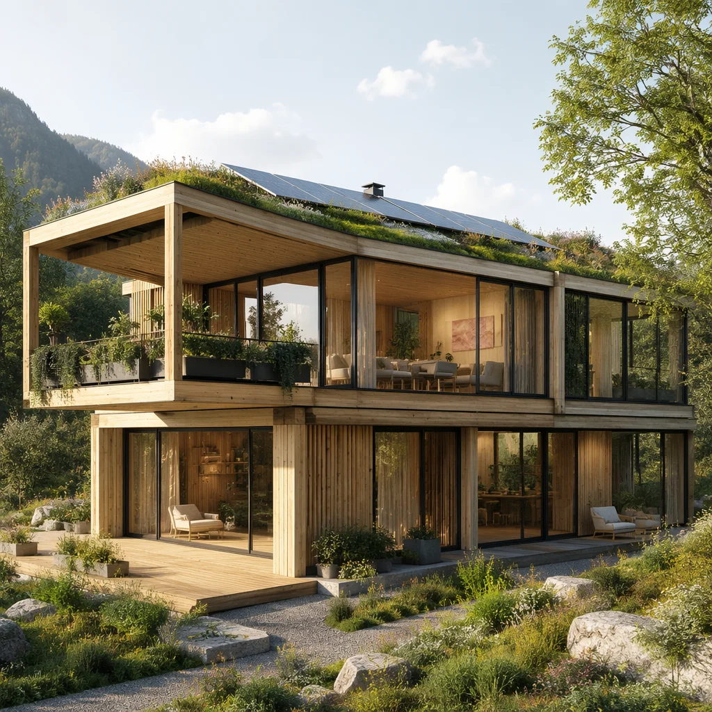

Modular construction is inherently more sustainable than traditional building methods. But at MODURA, we go further — engineering every module to minimise embodied carbon, maximise operational energy efficiency, and enable a circular economy where buildings can be disassembled, relocated, and reused rather than demolished.
Modular construction delivers quantifiable environmental benefits measured against conventional reinforced concrete and masonry construction.
Factory production achieves material utilisation rates above 97%, compared to 80–85% on conventional sites. Offcuts are segregated at source and recycled through audited waste streams. A typical 100-unit apartment building saves over 250 tonnes of waste from landfill.
Steel's high strength-to-weight ratio, combined with optimised cold-formed design, reduces material mass per square metre by 25–35% versus reinforced concrete. Whole-life carbon assessment to BS EN 15978, with modules A1–A5, B1–B7, and C1–C4 reported in every project EPD.
Continuous insulation, airtight factory sealing, and thermally broken module connections deliver building envelope performance 25% above IECC 2021 and Part L 2021 baselines. Operational energy modelling to ASHRAE 90.1 Appendix G with optional net-zero-ready specification packages.
Bolted module connections, accessible service risers, and demountable cladding systems mean our buildings are designed for end-of-life deconstruction. Modules can be unstacked, refurbished, and redeployed — extending the building's useful life beyond a single site and dramatically reducing whole-life carbon.
Verified sustainability data, independently assessed through Environmental Product Declarations (EPDs) and operational energy modelling. All figures are project-specific and verified at design stage and post-occupancy.
| Metric | MODURA Modular | Conventional (RC) | Delta | Standard / Method |
|---|---|---|---|---|
| Embodied Carbon A1–A3 | 185 kgCO&sub2;e/m² | 290 kgCO&sub2;e/m² | −36% | BS EN 15804 +A2, verified EPD |
| Embodied Carbon A1–A5 | 225 kgCO&sub2;e/m² | 355 kgCO&sub2;e/m² | −37% | BS EN 15978, including transport & site |
| Embodied Carbon A–C (Whole-Life) | 310 kgCO&sub2;e/m² | 520 kgCO&sub2;e/m² | −40% | BS EN 15978, 60-year reference period |
| Operational Energy (TEDI) | 12.5 kWh/m²/yr | 28.0 kWh/m²/yr | −55% | PHPP / ASHRAE 90.1 Appendix G |
| Space Heating Demand | 11 kWh/m²/yr | 45 kWh/m²/yr | −76% | EN ISO 13790 / SAP 10.2 |
| Air Permeability | 2.0 m³/h·m² @ 50Pa | 7.0 m³/h·m² @ 50Pa | −71% | ATTMA TSL1 / BS EN 13829 |
| Construction Waste | 9.2 kg/m² | 31.5 kg/m² | −71% | BREEAM Wst 01 methodology |
| Potable Water (Construction) | 0.15 m³/m² | 0.85 m³/m² | −82% | BREEAM Wat 01 methodology |
MODURA modular construction contributes to multiple credits across both major sustainability rating systems. Typical projects achieve LEED Gold (60–79 points) or BREEAM Excellent (≥ 70%).
| Rating System | Credit / Category | Typical Contribution | How MODURA Delivers |
|---|---|---|---|
| LEED v4.1 BD+C | MRc2 — Construction Waste | 2 points (75%+ diversion) | Factory waste segregation at source, audited recycling streams |
| LEED v4.1 BD+C | MRc3 — Building Product EPDs | 2 points (20+ products) | Type III EPDs for steel, insulation, plasterboard, glazing |
| LEED v4.1 BD+C | MRc4 — Recycled Content | 1–2 points | Steel 85%+ recycled content, EAF production route verified |
| LEED v4.1 BD+C | EQc1 — Enhanced IAQ | 2–3 points | Low-VOC materials, factory QA, pre-occupancy flush |
| LEED v4.1 BD+C | EAc1 — Optimise Energy | 10–18 points | 25%+ above ASHRAE 90.1, optional NZE pathway |
| BREEAM NC 2018 | Mat 01 — Life Cycle Impacts | 4–5 credits | Whole-life carbon assessment, Mat 01 calculator |
| BREEAM NC 2018 | Mat 03 — Responsible Sourcing | 3–4 credits | BES 6001 / FSC / PEFC chain of custody |
| BREEAM NC 2018 | Wst 01 — Construction Waste | 3–4 credits | < 7.5 m³ waste per 100 m² floor area |
| BREEAM NC 2018 | Ene 01 — Energy Performance | 8–12 credits | EPC rating A, Ene 01 calculation to Part L |
| BREEAM NC 2018 | Hea 02 — Indoor Air Quality | 2 credits | Low-formaldehyde, TVOC < 300 µg/m³ at handover |
Every material specified in a MODURA building carries independent third-party certification. We maintain a live material passport for each project, tracking origin, recycled content, and end-of-life pathway.
All major material categories — structural steel, insulation, plasterboard, glazing, flooring — carry Type III Environmental Product Declarations (EPDs) to EN 15804 +A2, verified by independent programme operators.
All timber-based products — OSB sheathing, plywood, engineered wood flooring, joinery — sourced with FSC or PEFC chain of custody certification. Zero tropical hardwood in standard specifications.
All structural steel produced via Electric Arc Furnace (EAF) route with minimum 85% post-consumer recycled content. Mill certificates to EN 10204 Type 3.1 with full chemical and mechanical traceability.
Paints, adhesives, sealants, and composite wood products all meet the most stringent global VOC standards: EU E1, CARB Phase 2, French A+, and LEED v4.1 low-emitting materials criteria.

Conventional buildings are demolished at end of life — an act of destruction that sends 90% of materials to landfill or, at best, downcycling. MODURA buildings are designed for a different outcome: disassembly, relocation, and reuse.
Every module connection is bolted, not welded, allowing modules to be unstacked in reverse order of erection. Service risers are accessible through demountable access panels. Cladding is mechanically fixed, not bonded, enabling material recovery at the facade level. Our material passports document every component by location, specification, and end-of-life pathway.
This approach transforms a building from a 60-year asset into a multi-generational resource. When a site's use changes, the building can be partially or fully relocated — reducing whole-life carbon by up to 60% versus demolition and rebuild.
Talk to our sustainability team about your project's environmental targets. We provide a whole-life carbon estimate, LEED/BREEAM pre-assessment, and material specification within your first engagement.
Get Started